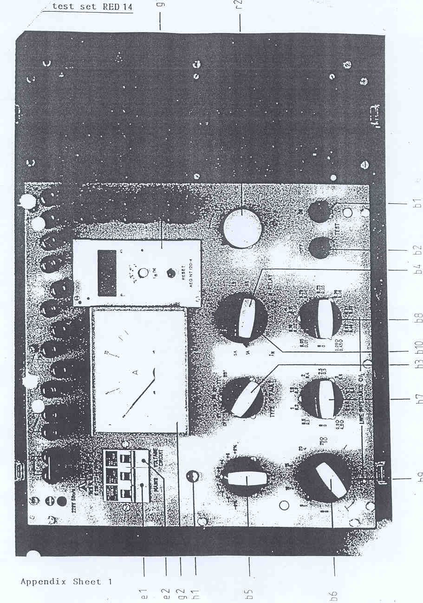
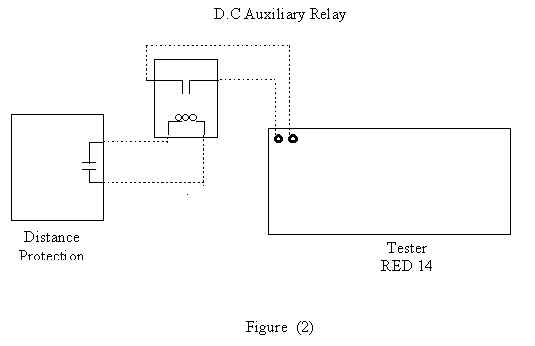

|
| Protection |
Technical Procedure
|
|
Equipment:
Distance Relay
SD135A
AEG |
Document No.: DsR-036-r0 |
|
Issued to:
Batsy
66
|
| Status:
APPROVED |
Procedure:
Using Test Set RED 14 |
Date Approved: 29 Dec 1997 |
|
Date to be Reviewed: Dec
2002 |
Introduction
The static distance protection SD135A is a switched relay
system, which means it, contains only one measuring unit for both distance and
direction. The starting unit can be selected for either for over current
starting or for under impedance starting. It is intended for the selective
protection of overhead lines or cables in high voltage systems. It can also be
employed as back up protection for generators and transformers in the very high
voltage system.
This procedure details the steps required to completely check
the proper operation and calibration of the SD135A relay. It is recommended this
procedure be carried out on a yearly bases. This work be carried out section of
this document is divided into 3 sections.
The first section is
the preliminary steps to prepare for relay testing
describes the activities required prior to testing. Some of these steps could be
performed days before the actual test. The second section is the preparation for
testing describes the steps to set up the equipment to perform the actual
tests. The third section is the actual test.
The document is formatted the way to minimize the possibility
of error causing personal injury or damage to equipment.
The first draft initialed
& tested by eng. Lotfy Abd El Paky at 29 Dec1997 at
Batsy.
Safety Precautions
-
A work
permit must be issued, qualified maintenance staff carry the suitable safety
ID category,
-
Safety fence
with caution marks surrounding the work area is required,
-
Personal protective equipment must be used as safety shoes, and safety
Helmet ... etc.
-
Ensure that Line isolation is done.
-
Make sure CT secondary circuits are shorted and VT secondary circuits are opened before
injection.
Tools and Equipment
- AEG relay test set RED14
- Voltmeter,
- Clip - on ammeter
- Test leads
- DC auxiliary relay with the same voltage rating as the control voltage.
Work to be Carried Out
Preliminary Steps to prepare for relay testing
- Review technical references material Manufacturer’s manual.
- Obtain copy of relay setting from field maintenance file and compare it
with the setting on the relay.
- Obtain outage for line protected by this relay.
- Checks that the bus and line disconnect switches are open and tagged.
- Inspect the CT secondary circuits, the VT .Miniature circuit breakers (MCB’S
), and all
- Cabling supplying the relay.
- Use the station drawings to isolate the following items:
- Breaker trip coils.
- Breaker failure scheme associated with this relay.
- Disturbance alarms and fault recorder associated with this relay.
Testing the Relay and Protection Outputs
- Carefully follow these test procedure steps from page 2 to page 7.
- Verify the test results match the relay setting, if not consult technical
services.
- Test trip the breaker associated with the relay.
Preparation
- This procedure is used to perform off load relay testing.
- Look at the E.E.A panel nameplate and check that this EEA system
designation agrees with the line that has been taken out of service for
maintenance.
- Check there is no AC current from CT’s by using a clip on ammeter.
- Check there is no AC voltage from VT’s by using a voltmeter.
- Labeling of Controls on Test Set (Fig . 1)
b1
push-button “ test ON “
b2
push-button “ test OFF”
b3
Fault selector switch “ Type of fault “
b4
Directional of current CT earthing “ line side “or “ Busbar side”
(designation LS, SS)
b5
% selector switch “D Z “
b7, b 8, b 9 Impedance setting.
b6
current increase “ I > “
b10
Rated current range selector switch ( IN = 1 A , I N = 5
A)
e1
6A miniature circuit - breaker simultaneously main switch.
e2
1A miniature circuit- breaker for voltage circuit.
g1
Timer NT 120
g2
Ammeter
h1
Flag indicator ON/ OFF.
r2
current setting “ I > “ (adjustment knob for current ).
Preparation of Test Set
- Set the two circuit breaker e1, e2 in, OFF, position.
- Rotate the current regulating knob r2 to the minimum current level (zero)
by rotating it to the fully counterclockwise ( ccw ) position.
- Set b5, b7, b8, and b9 switches in zero position.
- Set b6 switch in the minimum current level position.
- Set b10 switch according to the relay rated current ( In = 1 Amp or 5 Amp
).
- Change b4 switch to select the “kind of C.T earthing” used on the
protection.
- Change - over b3 switch to “OFF “ position.
- Short the terminals (R, Y, B) on the test set.
- Connect the current terminals on the test set R, Y, B and N to the current
terminals on the relay.
- Connect the voltage terminals on the test set U, V, W, and mp to the
voltage terminals on the relay.
- The AEG RED 14 test set can now be energized by plugging the main input
cord in to a normal 220 v AC source
Testing the Over-current Starting Unit
Current Test
- Look at the over-current setting (IF/ IN):
- If it value is a low setting, put b10 switch to 1A.
- If it value is a high setting, put b10 switch to 5A
- Set the fault selector switch b3 on position RR’
- Set the MCB e1 to “on” ‘ position.
Note: Flag indicator h1 will be white colour
- Push the push-button b1
- Inject current by rotating the knob r2 in clockwise direction until the
relay picks up and the LED “ A R” lights up on the relay.
- Record this value on the test sheet.
- Decrease the current by rotating the knob r2 in (ccw) until the relay
resets.
- Record this value in the test sheet.
- Push the push-button b2.
- Repeat the above test (Current test) from steps 1 to 9 for other phases
(bb’ and yy’ on test set)
Time Test
- Set b3 on RR’ position.
- Push the push-button b1.
- Inject current greater than the setting until the relay picks up.
- Push the push-button b2.
- Connect test leads between the output contact on the relay to the terminal
of coil of the DC auxiliary relay as shown in figures 1 and 2.
- Connect test lead between a free normally closed contact on the DC
auxiliary relay to “Remove Control” terminals on the test set as shown
in figures 1 and 2.
- Push the push-button b1.
- The timer will stop once the relay has picked up.
- Record this value in the test sheet.
- Push the push-button b2.
- Repeat the above test (Time test) from steps 1 to 9 for the other phases
(bb and yy on test set)
Testing The Phase To Earth Impedance (Characteristics)
- Turn the switches b7, b8 and b9 to agree with the zone one
setting.
- Turn the switches b10 on 5 Amp. position.
- Turn the switch b6 to maximum current level
- Set the MCB, e2 to “on” position.
- Turn the switch b3 on RR’ position.
- Start the test by pushing the push-button b1.
- Observe that the red indications AR , AM,
T1 and As light up .
- Change the value of zone one impedance which is set on the test set by
switches b7, b8 and b9, starting by turning switch b8 up or down until the
relay operates in second step.
(The red indication T2 on the relay
will light up with the last indications).- The second step time will be recorded on the screen of the timer
- Record this valve on test sheet.
- Repeat the above test, from step 1 to 9, but this time, set the second
zone impedance setting on the test set. Then, change it up or down until the
relay operates in third step.
- The red indication T3 on the relay will light up
- Repeat the above test, from step 1 to 9, once again but this time, set the
third zone impedance setting on the test set. After that chit up or down
until the relay operates in the fourth step.
- The red indication T4 on the relay will light up.
- Push the push-button b2.
- Repeat the above test from step 1 to 10 for phases S and T.
Testing the Phase to Phase Impedance Characteristic
- Turn the switch b3 to RY position.
- Turn the switch b7, b8, and b9
to agree with zone one setting.
- Start the test by pushing down the push button b1.
- Observe that the red indications AR, Ay, T1 and Aus
will light up.
- Change the value of zone one impedance which is set on the test set by
turning switches b7, b8 and b9 up or down until the relay operates in second
step.
- The red indication T2 on the relay will light up
with the last indications.
- Record this value on test sheet.
- Repeat the above test from step 1 to 5 step but this time, set the second
zone
- Impedance setting on the test set. Next, change it up or down until the
relay operates in third step.
- The red indication T3 on the relay will light up.
- Repeat the above test from step 1 to step 5 once again but this time, set
the third zone impedance setting on the test set. After that change it up or
down until the relay operates in fourth step.
- The red indication T4 on the relay will light up.
- Push the push-button b2.
- Repeat the above test from step 1 to 7 for phases YB and BR.
Reverse Direction Test
- Turn switch b4 to a position opposite to the current transformer
earthing.
- Start the test by pushing the push-button b1
- Observe that the red indication Q lights up. This means the fault in the
backward direction.
Measuring the Operating Times
- Set the impedance on the test set to a value which equals half
the normal pickup value in the first time step for phase to earth fault.
- Turn the switch b3 to RR’ position.
- Start the test by pushing the push-button b1.
- The timer will stop once the relay has picked up.
- Repeat the above test from step 1 to 4 to measure zone 2 tripping time,
but this time set the impedance on the test set to a value equal to the
normal pickup value in the second time zone.
- Repeat the above test from step 1 to 4 to measure zone 3 tripping time,
but this time set the impedance on the test set to a value equal to the
normal pickup value in the third time zone.
- Repeat the above test from step 1 to 5 but for phase to phase fault.
Performance and Tripping Test
Press push buttons PR, PS, PT or PM the starting signals are simulated and
the corresponding LED’s will light.
Press push-button PA simultaneously with push-button PR, PS, PT or PM and
the trip signal will be formed.
Distance protection P 135 general
Type of relay
:
Rated current : A
No. of relay
:
Rated voltage : V HZ
Scheme
:
Aux. voltage : V DC
Setting range
:
=
x i
Setting range : l-E = xin
Setting range : ze1-3
=
W
Setting range : T1-T2 = sec
Setting rar ,e : ke
=
Setting range : T3-T5 = sec
Setting range : zuz1
=
Setting range : f - L = o
Setting range : lF/ ln
=
Setting range : Uf/Un =
Setting range : ldk/ldl
=
Setting range : lM/lN =
Characteristic :
No.1-
Compensation : with / without arc
CT earthing : LS/
=
Phase prefer : R/S/T
Settings
Characteristic :
No.
Switch over-angle ldlk =
Over current : Idk/ln
=
Footing current : lf/ln =
Earth fault : lM/ln
=
Footing voltage : Uf/Un =
Impedance : Ze 1
= W
Switch factor : Zu/Zl =
Impedance : Ze 2 = W Phase
prefer :
Impedance : Ze 2 = W
Earth factor : ke =
Angle network : f -L = ° CT
earthing :
Trip time : T 1
=
sec Trip time : T2 = sec
Trip time : T 3
=
sec Trip time : T4 = sec
Trip time : T 5
=
sec
Function test impedance - time characteristic
Test angle :
Trigger phase :
R-S
Test current
impedance
:
W Trip time T1 sec
impedance :
W Trip time T2 sec
impedance :
W Trip time T3 sec
impedance :
W Trip time T4 sec
impedance
:
W Trip time T5 sec
0 (undirected)
Trigger phase :
S-T
Test current
impedance
:
W Trip time T1 sec
impedance :
W Trip time T2 sec
impedance :
W Trip time T3 sec
impedance :
W Trip time T4 sec
impedance :
W Trip time T5 sec
0 (undirected)
Trigger phase : T-R
impedance :
W Trip time T1 sec
impedance :
W Trip time T2 sec
impedance :
W Trip time T3 sec
impedance :
W Trip time T4 sec
impedance :
W Trip time T5 sec
0 (undirected)

Return Relay and Associated Equipment to Service
Test trip the breaker associated with the relay.
Return relay to service by removing the test leads from the relay terminals
block and the test set.
Make sure CT and VT secondary circuits are in normal condition.
If any
equipment associated with the relay has been isolated, it should be returned to
service by the following restoration steps
Request Power Line be returned To Service
Take crossed reading of all AC currents and voltages supplied to the relay
and compare them to those for normal load condition.
Check that readings agree with station meters (MW/MVAR/Power Factor/Ampere/Voltages)
Place a copy of the test results in the field maintenance file.

Location: Equipment
Designation:
Tested
by:
Signature:
Test Date:
Approved by:
Signature:
Test Date: